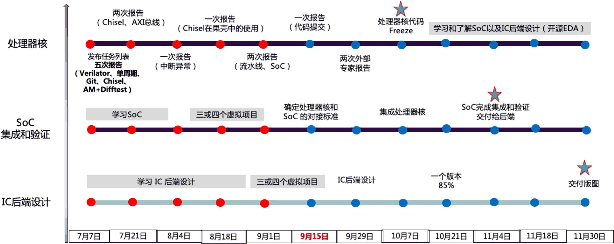

近期活动
项目时间线 (第三期)
各方向细分时间线

总体目标
践行“硅上做教学”的理念，专注提升同学们的动手实践和主动探索能力，力求让同学们理解和掌握从体系结构设计到RTL开发，再到SoC集成和验证，并经由综合和物理设计等，最终生成GDSII版图的完整过程
基础任务
实现一个五级流水线、可启动 RT-Thread 的 RV64 处理器核，集成至 SoC 并进行验证，通过测试验收即可流片
进阶任务
能力优秀者可尝试启动Linux或实现乱序多发射；负责 SoC 集成和验证；参与 IC 后端支撑工作，设计可流片版图
合作/赞助机构